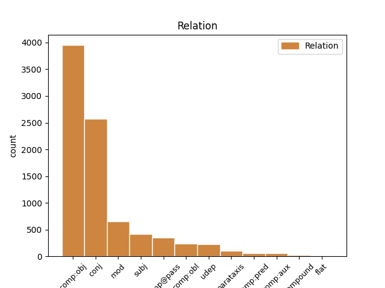

Distribution of features within this leaf

Agreement Rules sorted by frequency.
1 En _ _ _ _ 0 _ _ _
2 aquesta _ _ _ _ 0 _ _ _
3 ocasió _ _ _ _ 0 _ _ _
4 ho _ _ _ _ 0 _ _ _
5 farà fer VERB VERB Mood=Ind|Number=Sing|Person=3|Tense=Fut|VerbForm=Fin 0 _ _ _
6 davant _ _ _ _ 0 _ _ _
7 el _ _ _ _ 0 _ _ _
8 ministre _ _ _ _ 0 _ _ _
9 d' _ _ _ _ 0 _ _ _
10 Administracions _ _ _ _ 0 _ _ _
11 Públiques _ _ _ _ 0 _ _ _
12 , _ _ _ _ 0 _ _ _
13 Javier _ _ _ _ 0 _ _ _
14 Arenas _ _ _ _ 0 _ _ _
15 , _ _ _ _ 0 _ _ _
16 amb _ _ _ _ 0 _ _ _
17 qui _ _ _ _ 0 _ _ _
18 es _ _ _ _ 0 _ _ _
19 reunirà reunir VERB VERB Mood=Ind|Number=Sing|Person=3|Tense=Fut|VerbForm=Fin 5 mod _ _
20 dimecres _ _ _ _ 0 _ _ _
21 . _ _ _ _ 0 _ _ _
Disagree Examples:
1 En _ _ _ _ 0 _ _ _
2 el _ _ _ _ 0 _ _ _
3 cas _ _ _ _ 0 _ _ _
4 dels _ _ _ _ 0 _ _ _
5 empresaris _ _ _ _ 0 _ _ _
6 , _ _ _ _ 0 _ _ _
7 segons _ _ _ _ 0 _ _ _
8 Carod _ _ _ _ 0 _ _ _
9 , _ _ _ _ 0 _ _ _
10 la _ _ _ _ 0 _ _ _
11 situació _ _ _ _ 0 _ _ _
12 és _ _ _ _ 0 _ _ _
13 de _ _ _ _ 0 _ _ _
14 clar _ _ _ _ 0 _ _ _
15 greuge _ _ _ _ 0 _ _ _
16 comparatiu _ _ _ _ 0 _ _ _
17 amb _ _ _ _ 0 _ _ _
18 altres _ _ _ _ 0 _ _ _
19 comunitats _ _ _ _ 0 _ _ _
20 autònomes _ _ _ _ 0 _ _ _
21 , _ _ _ _ 0 _ _ _
22 ja _ _ _ _ 0 _ _ _
23 que _ _ _ _ 0 _ _ _
24 ' _ _ _ _ 0 _ _ _
25 aquí _ _ _ _ 0 _ _ _
26 no _ _ _ _ 0 _ _ _
27 poden _ _ _ _ 0 _ _ _
28 tenir _ _ _ _ 0 _ _ _
29 accés _ _ _ _ 0 _ _ _
30 a _ _ _ _ 0 _ _ _
31 sòl _ _ _ _ 0 _ _ _
32 industrial _ _ _ _ 0 _ _ _
33 , _ _ _ _ 0 _ _ _
34 ni _ _ _ _ 0 _ _ _
35 a _ _ _ _ 0 _ _ _
36 la _ _ _ _ 0 _ _ _
37 concessió _ _ _ _ 0 _ _ _
38 de _ _ _ _ 0 _ _ _
39 crèdits _ _ _ _ 0 _ _ _
40 tous _ _ _ _ 0 _ _ _
41 , _ _ _ _ 0 _ _ _
42 ni _ _ _ _ 0 _ _ _
43 al _ _ _ _ 0 _ _ _
44 suport _ _ _ _ 0 _ _ _
45 per _ _ _ _ 0 _ _ _
46 a _ _ _ _ 0 _ _ _
47 la _ _ _ _ 0 _ _ _
48 renovació _ _ _ _ 0 _ _ _
49 de _ _ _ _ 0 _ _ _
50 maquinària _ _ _ _ 0 _ _ _
51 , _ _ _ _ 0 _ _ _
52 tal _ _ _ _ 0 _ _ _
53 i _ _ _ _ 0 _ _ _
54 com _ _ _ _ 0 _ _ _
55 fan _ _ _ _ 0 _ _ _
56 els _ _ _ _ 0 _ _ _
57 governs _ _ _ _ 0 _ _ _
58 autònoms _ _ _ _ 0 _ _ _
59 de _ _ _ _ 0 _ _ _
60 Galícia _ _ _ _ 0 _ _ _
61 , _ _ _ _ 0 _ _ _
62 Castella-la _ _ _ _ 0 _ _ _
63 Manxa _ _ _ _ 0 _ _ _
64 o _ _ _ _ 0 _ _ _
65 Andalusia _ _ _ _ 0 _ _ _
66 ' _ _ _ _ 0 _ _ _
67 , _ _ _ _ 0 _ _ _
68 la _ _ _ _ 0 _ _ _
69 qual _ _ _ _ 0 _ _ _
70 cosa _ _ _ _ 0 _ _ _
71 ' _ _ _ _ 0 _ _ _
72 fa _ _ _ _ 0 _ _ _
73 que _ _ _ _ 0 _ _ _
74 se ell PRON PRON Person=3 76 comp:obj _ _
75 'n _ _ _ _ 0 _ _ _
76 ressenti ressentir-se VERB VERB Mood=Sub|Number=Sing|Person=1|Tense=Pres|VerbForm=Fin 0 _ _ _
77 la _ _ _ _ 0 _ _ _
78 modernització _ _ _ _ 0 _ _ _
79 general _ _ _ _ 0 _ _ _
80 del _ _ _ _ 0 _ _ _
81 país _ _ _ _ 0 _ _ _
82 ' _ _ _ _ 0 _ _ _
83 . _ _ _ _ 0 _ _ _
1 En _ _ _ _ 0 _ _ _
2 el _ _ _ _ 0 _ _ _
3 cas _ _ _ _ 0 _ _ _
4 dels _ _ _ _ 0 _ _ _
5 empresaris _ _ _ _ 0 _ _ _
6 , _ _ _ _ 0 _ _ _
7 segons _ _ _ _ 0 _ _ _
8 Carod _ _ _ _ 0 _ _ _
9 , _ _ _ _ 0 _ _ _
10 la _ _ _ _ 0 _ _ _
11 situació _ _ _ _ 0 _ _ _
12 és _ _ _ _ 0 _ _ _
13 de _ _ _ _ 0 _ _ _
14 clar _ _ _ _ 0 _ _ _
15 greuge _ _ _ _ 0 _ _ _
16 comparatiu _ _ _ _ 0 _ _ _
17 amb _ _ _ _ 0 _ _ _
18 altres _ _ _ _ 0 _ _ _
19 comunitats _ _ _ _ 0 _ _ _
20 autònomes _ _ _ _ 0 _ _ _
21 , _ _ _ _ 0 _ _ _
22 ja _ _ _ _ 0 _ _ _
23 que _ _ _ _ 0 _ _ _
24 ' _ _ _ _ 0 _ _ _
25 aquí _ _ _ _ 0 _ _ _
26 no _ _ _ _ 0 _ _ _
27 poden _ _ _ _ 0 _ _ _
28 tenir _ _ _ _ 0 _ _ _
29 accés _ _ _ _ 0 _ _ _
30 a _ _ _ _ 0 _ _ _
31 sòl _ _ _ _ 0 _ _ _
32 industrial _ _ _ _ 0 _ _ _
33 , _ _ _ _ 0 _ _ _
34 ni _ _ _ _ 0 _ _ _
35 a _ _ _ _ 0 _ _ _
36 la _ _ _ _ 0 _ _ _
37 concessió _ _ _ _ 0 _ _ _
38 de _ _ _ _ 0 _ _ _
39 crèdits _ _ _ _ 0 _ _ _
40 tous _ _ _ _ 0 _ _ _
41 , _ _ _ _ 0 _ _ _
42 ni _ _ _ _ 0 _ _ _
43 al _ _ _ _ 0 _ _ _
44 suport _ _ _ _ 0 _ _ _
45 per _ _ _ _ 0 _ _ _
46 a _ _ _ _ 0 _ _ _
47 la _ _ _ _ 0 _ _ _
48 renovació _ _ _ _ 0 _ _ _
49 de _ _ _ _ 0 _ _ _
50 maquinària _ _ _ _ 0 _ _ _
51 , _ _ _ _ 0 _ _ _
52 tal _ _ _ _ 0 _ _ _
53 i _ _ _ _ 0 _ _ _
54 com _ _ _ _ 0 _ _ _
55 fan _ _ _ _ 0 _ _ _
56 els _ _ _ _ 0 _ _ _
57 governs _ _ _ _ 0 _ _ _
58 autònoms _ _ _ _ 0 _ _ _
59 de _ _ _ _ 0 _ _ _
60 Galícia _ _ _ _ 0 _ _ _
61 , _ _ _ _ 0 _ _ _
62 Castella-la _ _ _ _ 0 _ _ _
63 Manxa _ _ _ _ 0 _ _ _
64 o _ _ _ _ 0 _ _ _
65 Andalusia _ _ _ _ 0 _ _ _
66 ' _ _ _ _ 0 _ _ _
67 , _ _ _ _ 0 _ _ _
68 la _ _ _ _ 0 _ _ _
69 qual _ _ _ _ 0 _ _ _
70 cosa _ _ _ _ 0 _ _ _
71 ' _ _ _ _ 0 _ _ _
72 fa _ _ _ _ 0 _ _ _
73 que _ _ _ _ 0 _ _ _
74 se _ _ _ _ 0 _ _ _
75 'n en PRON PRON Person=3|PronType=Prs 76 comp:obj _ _
76 ressenti ressentir-se VERB VERB Mood=Sub|Number=Sing|Person=1|Tense=Pres|VerbForm=Fin 0 _ _ _
77 la _ _ _ _ 0 _ _ _
78 modernització _ _ _ _ 0 _ _ _
79 general _ _ _ _ 0 _ _ _
80 del _ _ _ _ 0 _ _ _
81 país _ _ _ _ 0 _ _ _
82 ' _ _ _ _ 0 _ _ _
83 . _ _ _ _ 0 _ _ _
1 ' _ _ _ _ 0 _ _ _
2 Els _ _ _ _ 0 _ _ _
3 alemanys _ _ _ _ 0 _ _ _
4 fan _ _ _ _ 0 _ _ _
5 d' _ _ _ _ 0 _ _ _
6 espònsors _ _ _ _ 0 _ _ _
7 d' _ _ _ _ 0 _ _ _
8 Europa _ _ _ _ 0 _ _ _
9 com _ _ _ _ 0 _ _ _
10 els _ _ _ _ 0 _ _ _
11 catalans _ _ _ _ 0 _ _ _
12 ho ell PRON PRON Case=Acc|Gender=Neut|Number=Sing|Person=3|PronType=Prs 13 comp:obj _ _
13 fem fer VERB VERB Mood=Ind|Number=Plur|Person=1|Tense=Pres|VerbForm=Fin 0 _ _ _
14 d' _ _ _ _ 0 _ _ _
15 Espanya _ _ _ _ 0 _ _ _
16 , _ _ _ _ 0 _ _ _
17 i _ _ _ _ 0 _ _ _
18 a _ _ _ _ 0 _ _ _
19 sobre _ _ _ _ 0 _ _ _
20 ens _ _ _ _ 0 _ _ _
21 titllen _ _ _ _ 0 _ _ _
22 d' _ _ _ _ 0 _ _ _
23 insolidaris _ _ _ _ 0 _ _ _
24 ' _ _ _ _ 0 _ _ _
25 , _ _ _ _ 0 _ _ _
26 ha _ _ _ _ 0 _ _ _
27 afegit _ _ _ _ 0 _ _ _
28 . _ _ _ _ 0 _ _ _
1 ' _ _ _ _ 0 _ _ _
2 Els _ _ _ _ 0 _ _ _
3 alemanys _ _ _ _ 0 _ _ _
4 fan _ _ _ _ 0 _ _ _
5 d' _ _ _ _ 0 _ _ _
6 espònsors _ _ _ _ 0 _ _ _
7 d' _ _ _ _ 0 _ _ _
8 Europa _ _ _ _ 0 _ _ _
9 com _ _ _ _ 0 _ _ _
10 els _ _ _ _ 0 _ _ _
11 catalans _ _ _ _ 0 _ _ _
12 ho _ _ _ _ 0 _ _ _
13 fem _ _ _ _ 0 _ _ _
14 d' _ _ _ _ 0 _ _ _
15 Espanya _ _ _ _ 0 _ _ _
16 , _ _ _ _ 0 _ _ _
17 i _ _ _ _ 0 _ _ _
18 a _ _ _ _ 0 _ _ _
19 sobre _ _ _ _ 0 _ _ _
20 ens jo PRON PRON Case=Acc,Dat|Number=Plur|Person=1|PronType=Prs 21 comp:obj _ _
21 titllen titllar VERB VERB Mood=Ind|Number=Plur|Person=3|Tense=Pres|VerbForm=Fin 0 _ _ _
22 d' _ _ _ _ 0 _ _ _
23 insolidaris _ _ _ _ 0 _ _ _
24 ' _ _ _ _ 0 _ _ _
25 , _ _ _ _ 0 _ _ _
26 ha _ _ _ _ 0 _ _ _
27 afegit _ _ _ _ 0 _ _ _
28 . _ _ _ _ 0 _ _ _
1 En _ _ _ _ 0 _ _ _
2 aquest _ _ _ _ 0 _ _ _
3 sentit _ _ _ _ 0 _ _ _
4 , _ _ _ _ 0 _ _ _
5 el _ _ _ _ 0 _ _ _
6 vicepresident _ _ _ _ 0 _ _ _
7 primer _ _ _ _ 0 _ _ _
8 del _ _ _ _ 0 _ _ _
9 Consell _ _ _ _ 0 _ _ _
10 Comarcal _ _ _ _ 0 _ _ _
11 del _ _ _ _ 0 _ _ _
12 Bages _ _ _ _ 0 _ _ _
13 , _ _ _ _ 0 _ _ _
14 Ezequiel _ _ _ _ 0 _ _ _
15 Martínez _ _ _ _ 0 _ _ _
16 , _ _ _ _ 0 _ _ _
17 ha _ _ _ _ 0 _ _ _
18 reclamat _ _ _ _ 0 _ _ _
19 que _ _ _ _ 0 _ _ _
20 si _ _ _ _ 0 _ _ _
21 hi _ _ _ _ 0 _ _ _
22 ha _ _ _ _ 0 _ _ _
23 voluntat _ _ _ _ 0 _ _ _
24 de _ _ _ _ 0 _ _ _
25 reduir _ _ _ _ 0 _ _ _
26 plantilles _ _ _ _ 0 _ _ _
27 , _ _ _ _ 0 _ _ _
28 cal _ _ _ _ 0 _ _ _
29 que _ _ _ _ 0 _ _ _
30 això _ _ _ _ 0 _ _ _
31 es ell PRON PRON Case=Acc,Dat|Person=3|PrepCase=Npr|PronType=Prs|Reflex=Yes 32 comp:obj _ _
32 faci fer VERB VERB Mood=Sub|Number=Sing|Person=1|Tense=Pres|VerbForm=Fin 0 _ _ _
33 amb _ _ _ _ 0 _ _ _
34 ' _ _ _ _ 0 _ _ _
35 responsabilitat _ _ _ _ 0 _ _ _
36 ' _ _ _ _ 0 _ _ _
37 per _ _ _ _ 0 _ _ _
38 la _ _ _ _ 0 _ _ _
39 importància _ _ _ _ 0 _ _ _
40 del _ _ _ _ 0 _ _ _
41 sector _ _ _ _ 0 _ _ _
42 a _ _ _ _ 0 _ _ _
43 la _ _ _ _ 0 _ _ _
44 comarca _ _ _ _ 0 _ _ _
45 . _ _ _ _ 0 _ _ _